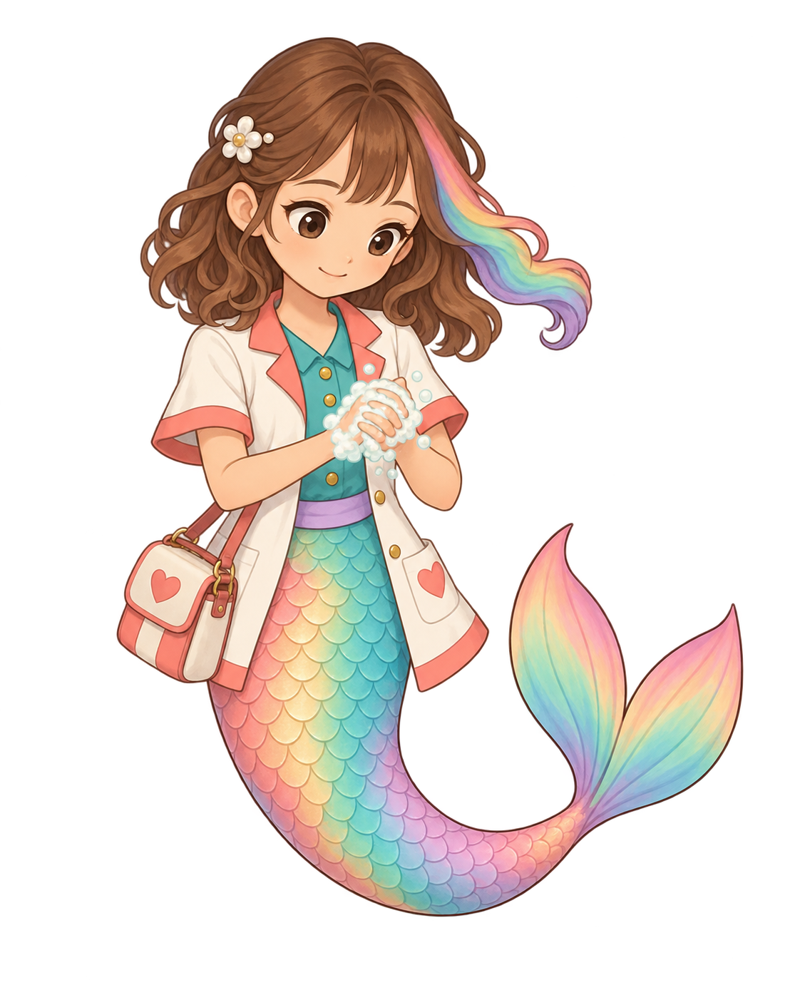
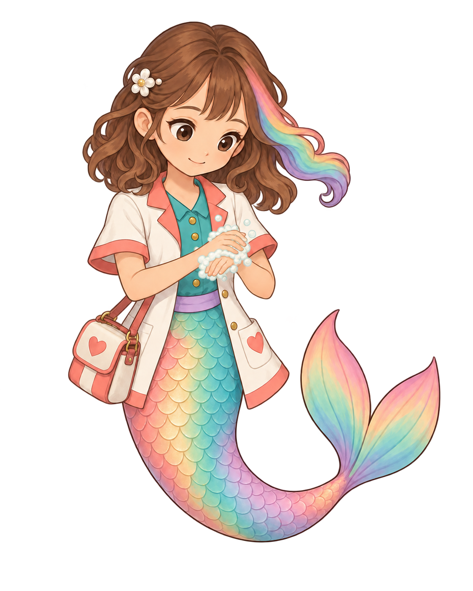
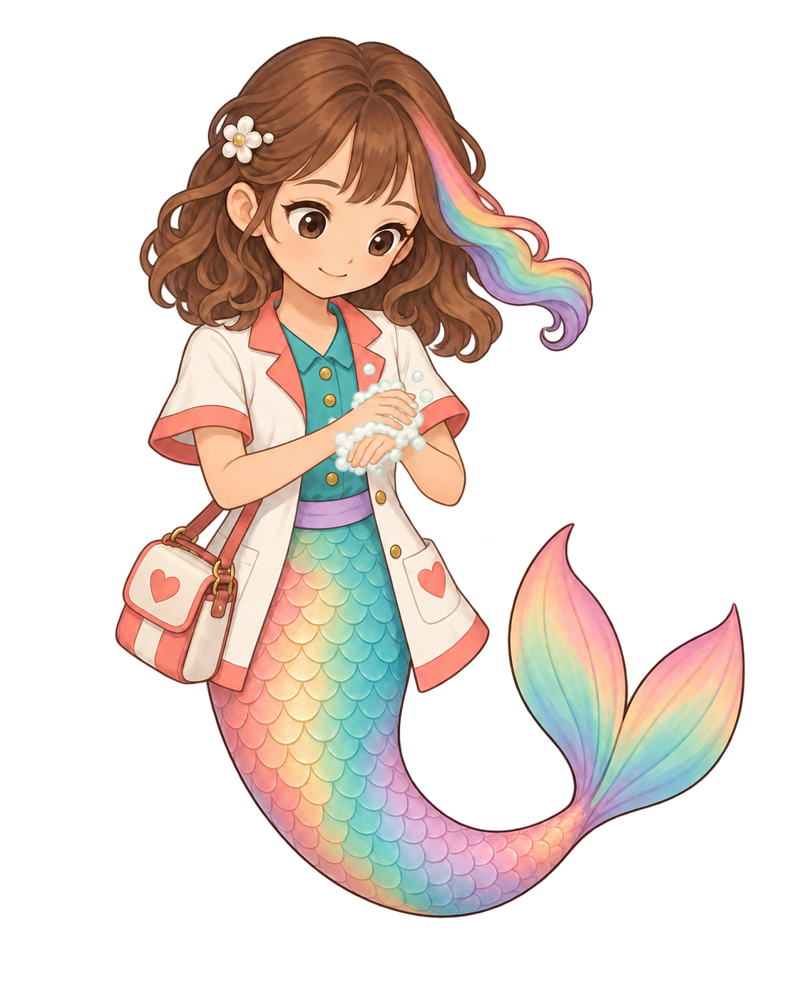
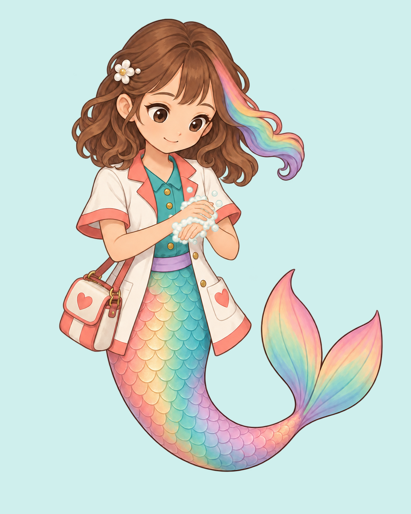

The existing painted sink will be reused. This complete generated character key addresses the named missing hand-rubbing pose; it is an unbound4.5 source-floor candidate. Native contact, exact registration and the full action remain pending.
Individual written evaluation · Exact prompt, reference and hashes · Reuse inventory and gap


Apparent red remnants in the transparency display have measured alpha1/255 at the inspected samples. These neutral composites were directly inspected at original size; they show no visible disconnected cluster. The native RGBA remains unmodified.


Exact alpha measurements